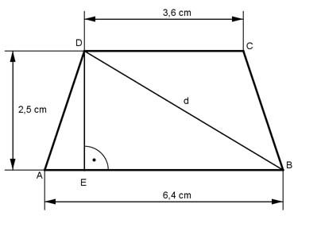

Pythagoras Aufgabe 43 Berechnen Sie die Diagonale d in einem gleichschenkligen Trapez in cm, wenn die parallelen Seiten 6,4 cm und 3,6 cm und die Höhe 2,5 cm betragen.  AB - DC 6,4 cm - 3,6 cm AE = --------- = ----------------- 2 2 AE = 1,4 cm Satz von Pythagoras im Dreieck EBD: d² = ED² + (AB - AE)² = d² = 2,5² cm² + (6,4 cm – 1,4 cm)² = 31,25 cm² |√ d = 5,6 cm